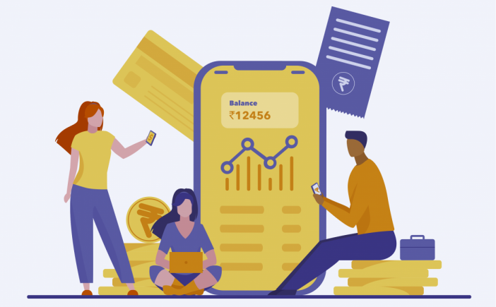

engaluru-based fintech startup Freo on June 21 launched a digital savings account offering Freo Save,
in partnership with Equitas Small Finance Bank, in a move to become a full-stack neobanking platform providing
lending, savings, and wealth-growth products to consumers.

MoneyTap, announced that it aims to open a million accounts over the next 10
months within the new savings vertical.
This Is What A New Hearing Aid Should Actually Cost
Ad
Best Hearing Aids
This Is What A New Hearing Aid Should Actually Cost
Freo’s move is opposite of that of its peers in the consumer neobanking platform space like Jupiter, Fi, Niyo,
and others. These players began by offering savings accounts in partnership with banks and are now foraying
into
lending.
Neobanking platforms act as a technology layer over core product offerings by making a proposition to make
banking easier through their interface.
Freo was co-founded by second-time founders and Indian School of Business alumni Anuj Kacker and Kunal Verma
in
2015 as a personal loan platform and is backed by investors including Sequoia Capital and Prime Venture
Partners.
Kacker said, “This is an integral step in our vision towards providing end-to-end financial products to the
country’s millennials, digitally and on the app. With the launch of Freo Save, we have now become a full-stack
neobank that will allow consumers to save, spend, and borrow with Freo’s help, all at the tap of a button.”